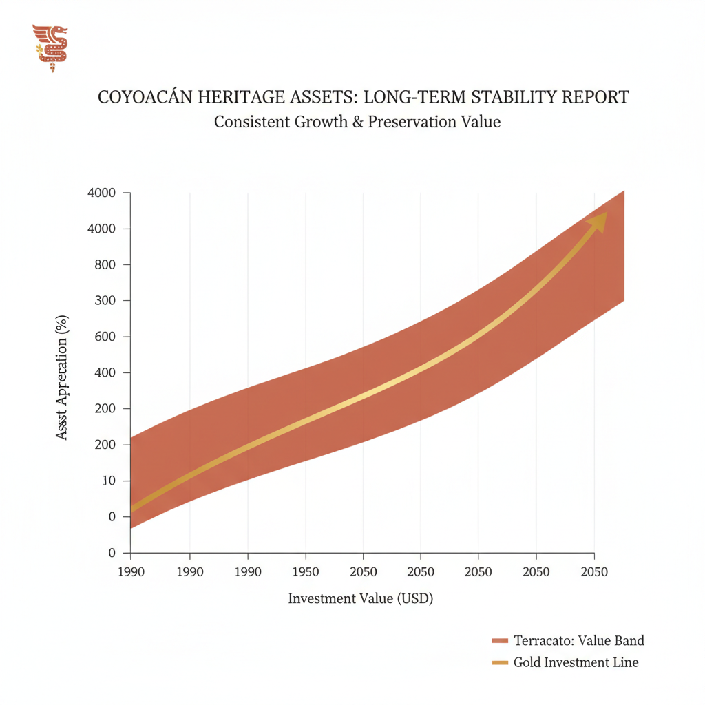

Architectural Guide 2026
Coyoacán: The Horizontal Anomaly.
In a Mexico City reaching for the sky, Coyoacán remains resolutely grounded—a colonial villa protected by federal mandate. For the ultra-high-net-worth investor, this isn't just real estate; it's a meticulously preserved cultural legacy with a permanent scarcity premium. We translate this unique market into 2026-ready architectural assets.

The Resident Architect's View
I, an architect who lives steps from Parque México in Condesa, am consistently drawn south to Coyoacán. It's the unique light filtering through the jacarandas at 5 PM, the quiet murmur around the Plaza Santa Catarina, and the profound sense of history etched into every 18th-century facade. But beyond the aesthetic, I find an enduring respect for its unique acoustic landscape—a symphony of church bells, distant mariachi, and the unmistakable, melodic call of the gasero that reverberates through its stone-walled streets. It’s a sensory experience deeply rooted in place.

Erik Martínez, AIA
Principal Architect. Former SHoP Architects NYC. Bringing international precision to CDMX's most complex heritage assets.
Iconic Landmarks
- Calle Francisco Sosa
- Calle Fernández Leal
- Jardín Hidalgo
- Plaza del Centenario
- Plaza Santa Catarina
- Plaza de la Concepción
The Genesis of a Horizontal Anomaly
Coyoacán, or 'place of coyotes' in Nahuatl, has steadfastly resisted Mexico City's vertical expansion. It remains a precious horizontal anomaly, fiercely protected by federal mandates that preserve its profound colonial 'villa' character. This rigid heritage preservation, stemming from its 18th and 19th-century origins as a distinct town before being absorbed by the growing metropolis, has created a 'premium for scarcity' in 2026. Here, investment transcends mere square meters; it signifies a stake in a federally protected cultural legacy.
2026 Dynamics: The Lifestyle Asset for the Global Elite
For the global professional, Coyoacán offers a coveted 'village within a city' aesthetic, a counterpoint to the corporate glass-and-steel of Polanco. This cultural proximity and walkability drive an inelastic international demand, evidenced by a 1-year value change of 11.2% for renovated Lifestyle properties—outperforming broader CDMX appreciation rates by 300 bps. The 2026 market sees robust rental yields for heritage or mid-century homes expertly renovated to high-spec modern standards, capturing the discerning 'Nomad' and 'Expat' market.
Geotechnical Reality: The Zone I Safe Haven
Uniquely within Mexico City, Coyoacán spans three distinct soil zones. Crucially, much of its desirable south and western sectors, including parts of Santa Catarina and the Pedregal de Santo Domingo, rest firmly on Zone I (Firm Soil). This volcanic lava flow offers unparalleled resistance and minimal seismic amplification, designating it as the safest zone in the city during a seismic event. In contrast, the historic center (Villa Coyoacán) is Zone II (Transition), a mix of firm materials and thin clay layers, while the northern and eastern edges (e.g., Del Carmen, Churubusco) fall into Zone III (Lakebed), prone to 4x to 8x seismic wave amplification.
For the astute investor, acquiring property in Zone I significantly reduces seismic engineering costs and insurance premiums, securing an inherently lower-risk asset. Even in Zone II and Zone III, our architectural practice integrates US NCARB/AIA rigorous engineering standards, specializing in seismic retrofitting to fortify older masonry structures. We ensure local maistro labor executes these complex designs, bridging international best practices with CDMX realities.
The INAH Layer: Preserving the Bohemian Enclave
Coyoacán's designation as a Zona de Monumentos Históricos places it under the exacting stewardship of the Instituto Nacional de Antropología e Historia (INAH). Almost the entire historic core, including iconic corridors like Calle Francisco Sosa, Calle Fernández Leal, Calle Juárez, and the colonial squares of Plaza Santa Catarina and Plaza de la Concepción, is 'Catalogued.' This mandates that all architectural interventions be 'reversible,' meticulously maintaining the original aesthetic harmony and historical integrity.
Navigating these Heritage Hurdles is paramount. INAH strictly prohibits modern materials such as anodized aluminum or vinyl (PVC) for window frames, insisting on treated timber (cedar or pine) or wrought iron, painted in approved dark tones. Facade materials must exclusively be traditional lime-sand mortars (morteros de cal), with modern ceramic tiles or stone veneers forbidden. Even color palettes are localized to 'oxical' pigments, limiting choices to specific shades like Rojo Óxido, Amarillo Ocre, and Blanco Ostión. Failure to adhere results in cost overruns of 20% to 40% for specialized materials and craftsmen, and the very real threat of a Clausurado (stoppage) order and demolition of non-compliant elements.
Water Security: Mitigating the Cutzamala Crisis
While the Sistema Cutzamala hydraulic complex saw a historic 680 million peso upgrade and 97.4% dam capacities in 2025/2026, Coyoacán remains a 'water-stressed' neighborhood. Localized tandeos (water rationing) are a persistent reality due to an aging delivery network. Consequently, property value is now inextricably linked to water storage autonomy. For a typical 3-bedroom Lifestyle home, we recommend a minimum cistern capacity of 10,000 to 15,000 liters to ensure five days of autonomy. Premium renovations integrate 'greywater' recycling for irrigation and dual-cycle filtration (sediment + UV) for incoming city water, addressing the sediment issues common in southern municipal lines.
Architectural Feasibility: Coyoacán 2026
| Project Type | Avg. Permit Time | Seismic Risk Level | Conservation Status |
|---|---|---|---|
| Renovated Heritage Mansion (Zone I) | 12 - 24 Months | Moderate (INAH/Permits) | Strict (INAH, H/3/20) |
| High-Spec Lifestyle Home (Zone II/III) | 18 - 30 Months | High (Structural/INAH) | Very Strict (INAH, H/3/20) |
| Premium Apartment (Del Carmen) | 9 - 18 Months | Moderate (Permits/Utilities) | Strict (SEDUVI, H/3/20) |
Architectural Interventions for the Modern Nomad
Restoring Coyoacán's heritage means engineering for the 21st century. We implement acoustic decoupling for facades, utilizing internal high-performance glass panes behind original timber frames, combined with high-density acoustic mineral wool and double-layered gypsum board with 'Green Glue' dampening for interior partitions. Power stability is secured with an Uninterruptible Power Supply (UPS) for networking and whole-house surge protectors. Furthermore, properties integrating solar panels and rainwater harvesting are seeing a 15% rental premium, appealing to the 'Eco-Nomad' market.
Bohemian Luxury, Masterfully Realized
Our interior philosophy for Coyoacán harmonizes modern luxury with enduring colonial charm. We specify high-spec renovations that discreetly integrate seismic reinforcement, advanced acoustic insulation, and sustainable water systems within heritage parameters. This demands specialized craftsmen for lime-based finishes and historical window profiles. The focus is on creating environments that exude a refined, 'quiet luxury' while meeting international standards for comfort and technology.
The Coyoacán Cheat Sheet
- Best Streets Francisco Sosa, Fernández Leal, Del Carmen (Most Walkable)
- Zoning Code H/3/20 (Habitacional / 3 Levels / 20% Área Libre)
- Est. Cost / m² MXN 50,000 - 90,000 / m² (High-End Luxury Finishes)
- Best Coffee Café El Jarocho
- Local Quirk The unique acoustic environment where the melodic calls of gaseros and fierro viejo collectors amplify between cobblestone streets and stone walls.

The Challenge
The Coyoacán market is one of informed patience. High barriers to entry—bureaucratic, fiscal, and structural—filter against short-term speculative flipping. Permit timelines for a Manifestación de Construcción average 6 to 12 months, exacerbated for heritage properties requiring cross-referencing between the Alcaldía, SEDUVI, and INAH. Furthermore, progressive ISAI taxes and high closing costs (6-10%) demand a 5-year+ hold horizon.
Every major project requires a Director Responsable de Obra (DRO), who assumes 10 years of personal legal liability for structural stability. In Coyoacán, the DRO is often supported by specialized Corresponsables in Structural Safety, Urban Design & Architecture (crucial for INAH zones), and Installations, ensuring meticulous adherence to codes, particularly for properties in Zone II or Zone III.
Our Solution
Our strategy for Coyoacán is built on granular due diligence and meticulous planning. We advocate for prioritizing acquisitions south of Calle Miguel Hidalgo to secure Zone I (Firm Soil) assets, minimizing seismic risk. We factor a minimum 9 months for full architectural approvals into every financial model, effectively buffering against administrative bottlenecks. Proactive verification of existing electrical transformer capacity and municipal water lines preempts common 'hidden' infrastructure costs, ensuring a smooth project trajectory.
To eliminate the pervasive 'Gringo Tax,' we deploy a transparent 'Percentage of Cost' (20-30%) procurement model, managed by a dedicated Gerente de Proyecto. This approach guarantees fair market rates for construction labor and materials. While international buyers are often quoted MXN 50,000 to 90,000/m² for luxury finishes, our method ensures access to the true market range of MXN 30,000 to 60,000/m², translating into substantial savings and predictable project budgets.


Planning to Buy?
Don't sign a contract before a technical audit. We offer pre-purchase structural assessments in Coyoacán.
2026 Cost Report
Get our detailed breakdown of current labor and material costs for luxury residential in CDMX.
Start Your Coyoacán Legacy
NYC Precision. Mexican Craft. We eliminate uncertainty for international investors.